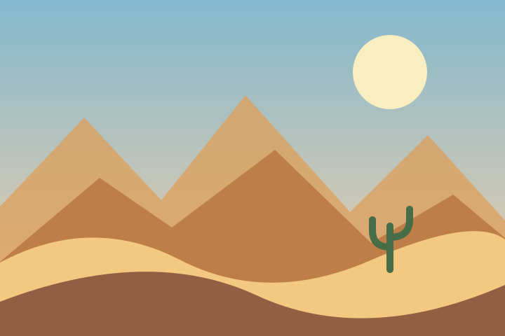
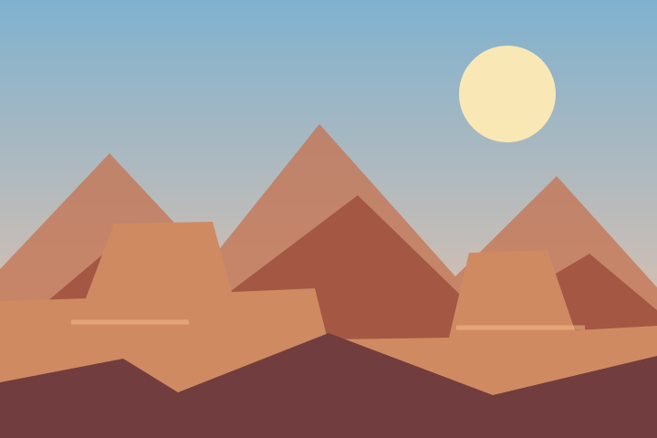

Welcome to Nature Gallery! This collection features nine illustrated landscapes, from peaceful lakes and forests to sunny coastlines and dramatic mountain peaks. Each scene celebrates a different part of the natural world.
Explore the gallery on your phone, tablet, or computer. Its layout adapts to your screen size, and the colors and scrolling effects respond to your device's accessibility preferences.

